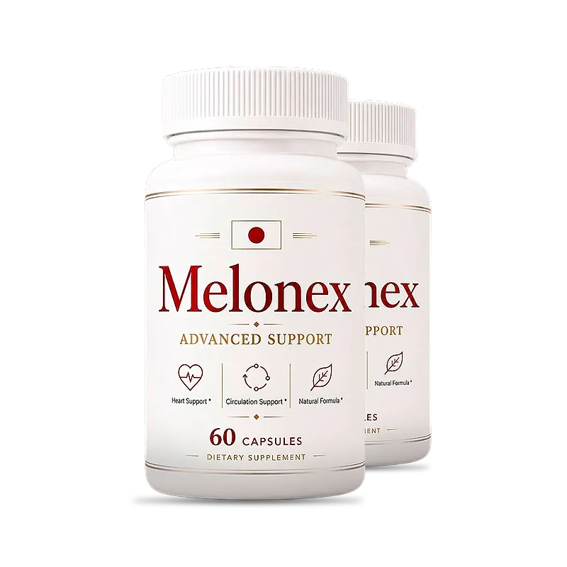
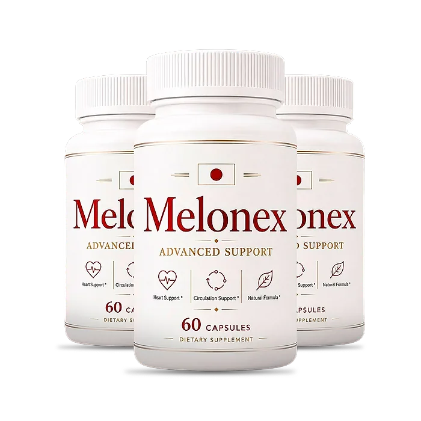

What Is Melonex And How Does It Work?
Melonex is a dietary supplement in capsules designed to support heart health, healthy circulation, and blood pressure levels that are already within the normal range, for adults who want a simple daily routine to take care of their cardiovascular wellness as they get older.
The label calls it "Advanced Support" and highlights three goals: heart support, circulation support, and a natural formula. Its Supplement Facts panel lists a 500 mg blend of three amino acids: L-Citrulline DL-Malate, L-Arginine Alpha-Ketoglutarate (AAKG), and L-Arginine HCl.
The idea behind the formula is nitric oxide, a molecule the body makes to help blood vessels relax and widen. L-arginine is the direct building block of nitric oxide, and L-citrulline is converted into arginine by the kidneys, which keeps arginine levels up for longer. According to the official website, the three ingredients work together to support healthy blood vessel function, balanced blood pressure levels, and healthy nitric oxide levels.
Rather than acting as a quick fix, Melonex is meant to be taken every day for several months, and the official FAQ says most customers choose a six-month supply so the ingredients have time to work consistently.
With consistent daily use, the customers quoted on the official website describe steadier readings, more energy, and less stress, especially when the capsules are combined with a diet low in salt and rich in vegetables, regular walks, good sleep, and regular check-ups with a doctor.
From a practical standpoint, Melonex is one capsule a day with an 8 oz glass of water, preferably in the morning, and each bottle holds 60 capsules.
According to the label, Melonex is made in the USA with globally sourced ingredients, in an FDA-registered facility. It is a dietary supplement, not a blood pressure medication, and it does not replace any treatment prescribed by your doctor.
Melonex Ingredients
Each capsule of Melonex contains a 500 mg proprietary blend of three amino acids, according to the Supplement Facts panel. These are the ingredients, chosen to support circulation, blood vessel function, and nitric oxide production:
L-Citrulline DL-Malate: L-citrulline bound to malic acid. The body turns citrulline into arginine, which is why it is studied for sustained nitric oxide production and healthy blood flow.
L-Arginine Alpha-Ketoglutarate (AAKG): A form of arginine bound to alpha-ketoglutarate, described by the official website as gentle on the stomach and used to support blood flow and the delivery of nutrients.
L-Arginine HCl: A fast-absorbing form of arginine, the direct precursor of nitric oxide, which helps blood vessels relax.
The other ingredients are hydroxypropyl methylcellulose (the vegetable capsule), microcrystalline cellulose, and magnesium stearate. Because the three amino acids come as a proprietary blend, the label does not show how much of each one is in the 500 mg, and most clinical studies on citrulline and arginine use larger daily amounts than a single capsule provides.
The official FAQ mentions high-quality plant extracts, but the label lists only amino acids, so the label is the reference to follow. Melonex is designed for daily use, as a simple, non-prescription addition to a heart-healthy routine.
Melonex Side Effects
Melonex is made with amino acids that the body already produces and that are found in foods such as watermelon, nuts, fish, and meat, and at the amount of one capsule a day they are generally well tolerated by healthy adults.
According to the label, the capsules are made in the USA in an FDA-registered facility, and the official FAQ describes the ingredients as high-purity and naturally derived.
There are no widespread reports of serious side effects. Arginine and citrulline can cause mild stomach upset, bloating, or loose stools in some people. Because they help blood vessels relax, they may add to the effect of blood pressure medications, nitrates for chest pain, and erectile dysfunction pills, which can make the pressure drop too low. People who take any of these, who have had a heart attack, who have kidney disease, or who have a history of cold sores should talk to their doctor before starting. It is not intended to diagnose, treat, cure, or prevent any disease, and individual results may vary.
The label advises pregnant or nursing women, people under 18, and anyone with a known medical condition to consult a physician first. Never stop or change a blood pressure medication on your own.
Melonex Dosage
According to the label and the official FAQ, the recommended way to take Melonex is one capsule daily with an 8 oz glass of water. The label says you may take up to two capsules daily, and the FAQ suggests the morning.
Formulated as an easy daily capsule, it requires no powders to mix and nothing to measure. Taking it at the same time every day, with breakfast, makes the routine easy to remember.
For best results, consistency is key. Each bottle holds 60 capsules, which lasts two months at one capsule a day or one month at two. The official order page describes each bottle as a 60-day supply, while the sales page describes it as a 30-day supply, so the label on the bottle is the best reference.
Healthy habits matter a lot for the heart and circulation: less salt and processed food, more vegetables and fruit, a daily walk, limited alcohol, no smoking, good sleep, and checking your blood pressure at home and with your doctor.
As with any dietary supplement, do not exceed the recommended dose of two capsules a day. Melonex works best when used regularly, combined with healthy daily habits.
Melonex – Refund Policy
Melonex is backed by a 60-day Results or Refund Guarantee, which, according to the official website, counts from the date of purchase and asks for at least 30 days of continuous use.
The refund rules on the official FAQ page add conditions that are worth reading before ordering: the minimum trial period is 30 days, the return must start within 60 days of the purchase date, only sealed bottles are eligible for a refund, shipping and customs fees are not refunded, the return shipping is paid by the customer, and a 20% restocking fee is deducted from the total.
How to request a refund: Email contact@customercs.com to request a return authorization code and follow the instructions of the support team. Keeping the order email and the tracking number makes the process easier.
Customer Support Contact Information: contact@customercs.com or +1 (855) 889-3137, as listed on the official order page, or +1 (507) 448-8190, as printed on the label. The FAQ says emails are usually answered within 48 business hours.
Refund Processing Time: Once the returned items are received and verified, the refund goes back to the original payment method and may take 5 to 10 business days to appear on your statement, depending on your bank.
The rules are published openly, but the restocking fee and the sealed-bottle condition make the guarantee narrower than it first sounds, so it is worth confirming the terms with support before ordering.
Melonex Customer Reviews
-
Michael Thompson — Houston, TexasVerified Purchase – 6 Bottles
“If it wasn't for Melonex, I'd still be struggling with my blood pressure... But thank goodness I didn't have to do any of that, because just two weeks into taking Melonex, I began to see my blood pressure stabilize and my energy levels soar. Managing my circulation has never been this easy and straightforward!”
-
Georgia Rodriguez — Chicago, IllinoisVerified Purchase – 6 Bottles
“I was totally discouraged about my blood pressure, dealing with constant spikes and feeling tired all the time... But then I started on Melonex, and day by day, my blood pressure became more balanced... I even noticed my stress levels diminishing... And I swear, it felt like I regained control of my health in just 3 weeks!”
-
Lauren Rio — Seattle, WashingtonVerified Purchase – 6 Bottles
“I was about to give up on finding something that actually worked for managing my blood pressure, and then Melonex showed up... Oh, what a relief!!! My blood pressure readings are now consistently in the healthy range, and I feel so much more energetic. I can hardly believe it, it's truly life-changing.”
Melonex – Where To Buy
Melonex is sold through its official website, so if you decide to try it, it's important to be careful about where you purchase it. The official website is the only sales channel the manufacturer lists, and it does not point to marketplaces such as Amazon, eBay, or Walmart.
Listings on third-party platforms may look similar but cannot be verified as authentic, raising concerns about safety, quality, and ingredient freshness — a real concern for a product you take every day. Products purchased outside the official source may not be covered by the 60-day guarantee.
For this reason, most customers recommend purchasing Melonex only through the official website. Buying directly from the official source ensures you receive the authentic original product, made in the USA, with access to customer support and the full guarantee. According to the official website, every purchase is a one-time order, with no automatic renewals, hidden fees, or surprise charges.
To avoid counterfeit batches and ensure maximum quality, always verify that you are ordering from the official Melonex website before completing your purchase.
To ensure you’re getting the authentic product, most users choose to visit the official website.
Is Melonex A Scam?
Going by what the official website shows, Melonex does not look like a scam. It is a real capsule supplement with a published Supplement Facts panel, a distributor named on the label (Instituto Experience, Lakeland, Florida), a support email and phone lines, and written refund rules, with orders processed by BuyGoods, an established retailer.
There are, however, signs of a website assembled in a hurry. The FAQ names another product, "Slimtide," in the guarantee answer; the order page describes each bottle as a 60-day supply while the sales page says 30 days; the FAQ talks about plant extracts and calls the formula stimulating, although the label lists only three amino acids; and the bonus guide mentions sublingual absorption for a capsule you swallow. The amounts of each amino acid are also hidden inside the 500 mg blend.
None of this proves the product is bad, but it is a good reason to rely on the label of the bottle you receive and to read the refund rules before ordering.
Customers quoted on the official website describe steadier readings, more energy, and less stress. Expectations should stay realistic: results vary from person to person, and no supplement replaces a doctor's care, prescribed treatment, or a heart-healthy lifestyle.
Melonex is backed by a 60-day guarantee, and the official FAQ says every order is a one-time payment, with no auto-ship or hidden fees.
For adults who want a simple daily capsule to support circulation, heart health, and blood pressure levels already within the normal range, Melonex is worth considering — ideally bought from the official website and discussed with your doctor first.
For those who want to verify product details or check current availability, the official Melonex website remains the safest option.
